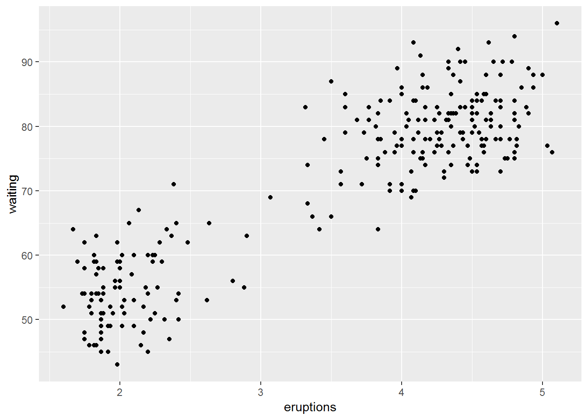
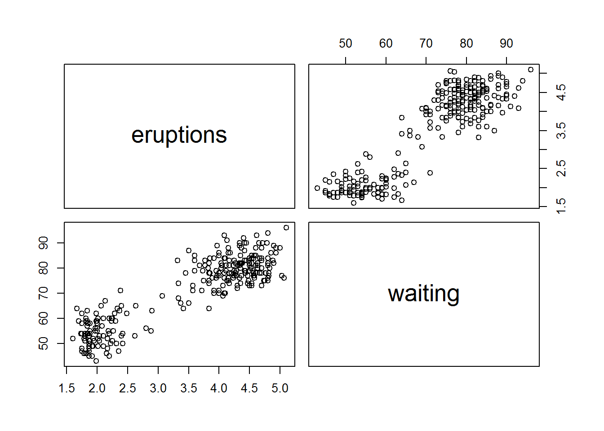
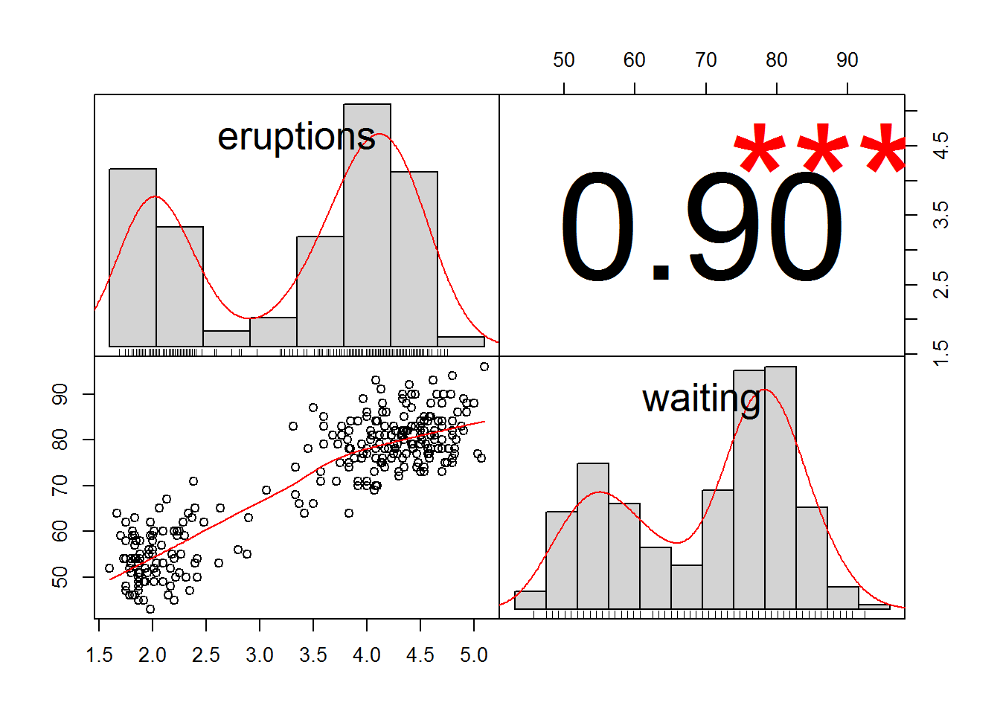
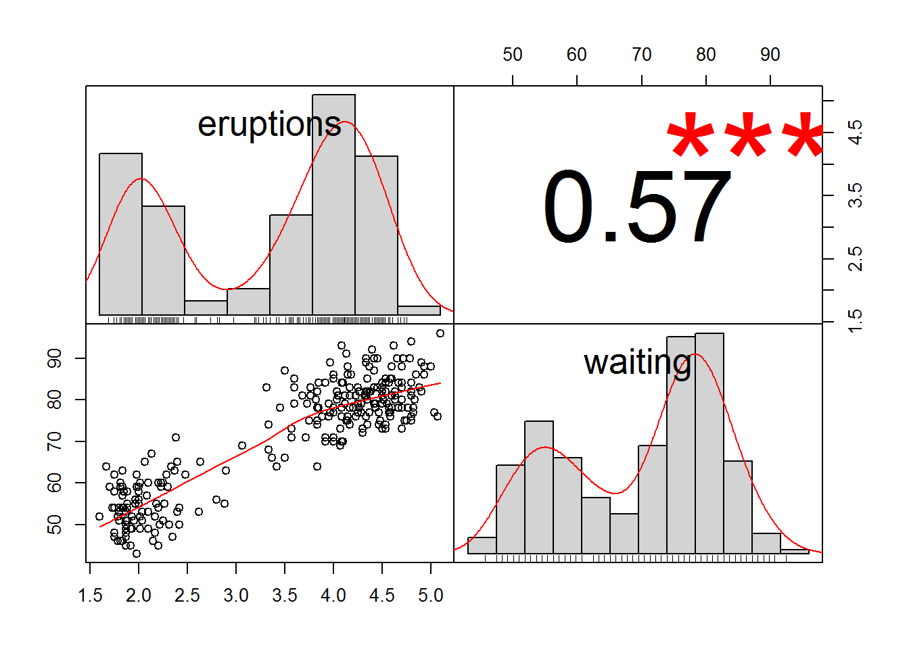
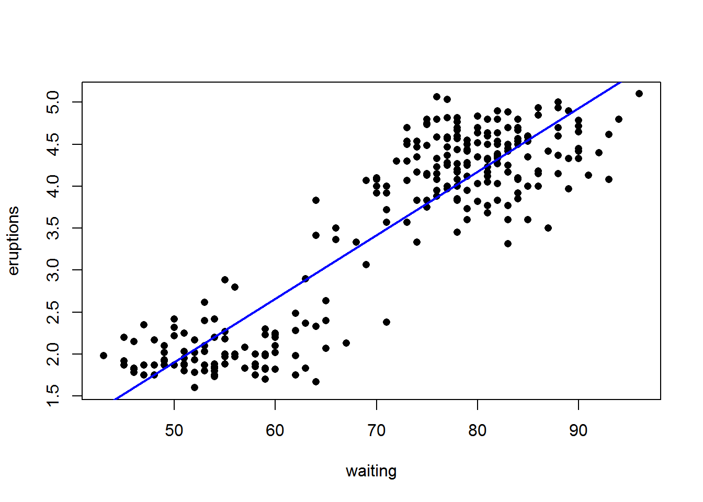
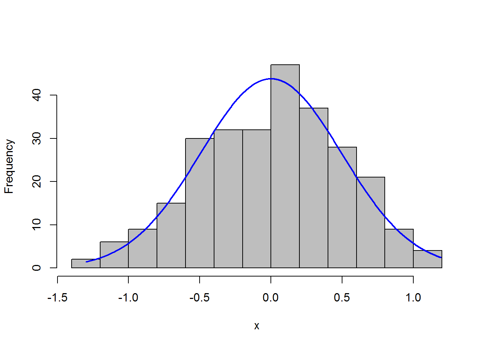

Chapter 6 From data visualization to statistical modelling
Patterns in the data provide clues about relationship or covariation.Now that we know how to visualize the various relationships, we can proceed to know more about how to formally test the relationship.
Statistical models are tools for extracting patterns out of data.
Statistics represent a common method of presenting information helping us to understand what the data are telling us.
Descriptive (or summary) statistics summarise the raw data and allow data users to interpret a dataset more easily.Descriptive statistics can describe the shape, centre and spread of a dataset.
Inferential statistics are used to infer conclusions about a population from a sample of that population. Inferential statistics are the result of techniques that use the data collected from a sample to make generalisations about the whole population from which the sample was taken. Inferential statistics include estimation (An estimate is a value that is inferred for a population based on data collected from a sample of units from that population), and hypothesis testing.
knitr::include_graphics("img/stats.png")
Figure 6.1: stats
#source:from slides, Dr.Russell Thomson, Statistical Consultant, Centre for Research in Mathematics and Graduate Research School6.1 Two continuous/numerical variables
The techique we used here is called Simpler linear regression, where there is one dependent variable (continuous) and one independent variable (continuous). When there are more than one independent variable (continuous), you need to look for something called Multiple linear regression.
head(faithful)## eruptions waiting
## 1 3.600 79
## 2 1.800 54
## 3 3.333 74
## 4 2.283 62
## 5 4.533 85
## 6 2.883 55ggplot(faithful)+
geom_point(aes(eruptions, waiting)) Correlation and linear regression each explore the relationship between two quantitative variables. (Salvatore S. Mangiafico)
Correlation determines if one variable varies systematically as another variable changes. It does not specify that one variable is the dependent variable and the other is the independent variable. Often, it is useful to look at which variables are correlated to others in a data set, and it is especially useful to see which variables correlate to a particular variable of interest.
In contrast, linear regression specifies one variable as the independent variable and another as the dependent variable. The resultant model relates the variables with a linear relationship.
The tests associated with linear regression are parametric and assume normality, homoscedasticity, and independence of residuals, as well as a linear relationship between the two variables.
if(!require(psych)){install.packages("psych")}## Loading required package: psych##
## Attaching package: 'psych'## The following object is masked from 'package:rcompanion':
##
## phi## The following object is masked from 'package:Hmisc':
##
## describe## The following objects are masked from 'package:ggplot2':
##
## %+%, alphaif(!require(PerformanceAnalytics)){install.packages("PerformanceAnalytics")}## Loading required package: PerformanceAnalytics## Loading required package: xts## Loading required package: zoo##
## Attaching package: 'zoo'## The following objects are masked from 'package:base':
##
## as.Date, as.Date.numeric##
## Attaching package: 'xts'## The following objects are masked from 'package:dplyr':
##
## first, last##
## Attaching package: 'PerformanceAnalytics'## The following object is masked from 'package:graphics':
##
## legendif(!require(ggplot2)){install.packages("ggplot2")}
if(!require(rcompanion)){install.packages("rcompanion")}
library(psych)
pairs(data=faithful,
~ eruptions + waiting)
pairs(data=iris,
~ Sepal.Length + Sepal.Width + Petal.Length +Petal.Width)
corr.test(faithful,
use = "pairwise",
method = "pearson",
adjust = "none")## Call:corr.test(x = faithful, use = "pairwise", method = "pearson",
## adjust = "none")
## Correlation matrix
## eruptions waiting
## eruptions 1.0 0.9
## waiting 0.9 1.0
## Sample Size
## [1] 272
## Probability values (Entries above the diagonal are adjusted for multiple tests.)
## eruptions waiting
## eruptions 0 0
## waiting 0 0
##
## To see confidence intervals of the correlations, print with the short=FALSE optionlibrary(PerformanceAnalytics)
chart.Correlation(faithful,
method="pearson",
histogram=TRUE,
pch=16)
chart.Correlation(faithful,
method="kendall",
histogram=TRUE,
pch=16)
chart.Correlation(faithful,
method="spearman",
histogram=TRUE,
pch=16)## Warning in cor.test.default(as.numeric(x), as.numeric(y), method = method):
## Cannot compute exact p-value with ties The statistics r, rho, and tau are used as effect sizes for Pearson, Spearman, and Kendall regression, respectively. These statistics vary from –1 to 1, with 0 indicating no correlation, 1 indicating a perfect positive correlation, and –1 indicating a perfect negative correlation. Like other effect size statistics, these statistics are not affected by sample size.
The statistics r, rho, and tau are used as effect sizes for Pearson, Spearman, and Kendall regression, respectively. These statistics vary from –1 to 1, with 0 indicating no correlation, 1 indicating a perfect positive correlation, and –1 indicating a perfect negative correlation. Like other effect size statistics, these statistics are not affected by sample size.
Interpretation of effect sizes necessarily varies by discipline and the expectations of the experiment. They should not be considered universal. An interpretation of r is given by Cohen (1988). It is probably reasonable to use similar interpretations for rho and tau.
small: 0.10 – < 0.30
medium: 0.30 – < 0.50
large: ≥ 0.50
The test used for Pearson correlation is a parametric analysis that requires that the relationship between the variables is linear, and that the data be bivariate normal. Variables should be interval/ratio. The test is sensitive to outliers.
The correlation coefficient, r, can range from +1 to –1, with +1 being a perfect positive correlation and –1 being a perfect negative correlation. An r of 0 represents no correlation whatsoever. The hypothesis test determines if the r value is significantly different from 0.
Kendall correlation is considered a nonparametric analysis. It is a rank-based test that does not require assumptions about the distribution of the data. Variables can be interval/ratio or ordinal.
The correlation coefficient from the test is tau, which can range from +1 to –1, with +1 being a perfect positive correlation and –1 being a perfect negative correlation. A tau of 0 represents no correlation whatsoever. The hypothesis test determines if the tau value is significantly different from 0.
As a technical note, the cor.test function in R calculates tau-b, which handles ties in ranks well.
The test is relatively robust to outliers in the data. The test is sometimes cited for being reliable when there are small number of samples or when there are many ties in ranks.
Spearman correlation is considered a nonparametric analysis. It is a rank-based test that does not require assumptions about the distribution of the data. Variables can be interval/ratio or ordinal.
The correlation coefficient from the test, rho, can range from +1 to –1, with +1 being a perfect positive correlation and –1 being a perfect negative correlation. A rho of 0 represents no correlation whatsoever. The hypothesis test determines if the rho value is significantly different from 0.
Spearman correlation is probably most often used with ordinal data. It tests for a monotonic relationship between the variables. It is relatively robust to outliers in the data.
cor.test( ~ eruptions + waiting,
data=faithful,
method = "pearson")##
## Pearson's product-moment correlation
##
## data: eruptions and waiting
## t = 34.089, df = 270, p-value < 2.2e-16
## alternative hypothesis: true correlation is not equal to 0
## 95 percent confidence interval:
## 0.8756964 0.9210652
## sample estimates:
## cor
## 0.9008112# the results report the p-value for the hypothesis test as well as the r value, written as cor, 0.849.
cor.test( ~ eruptions + waiting,
data=faithful,
method = "kendall")##
## Kendall's rank correlation tau
##
## data: eruptions and waiting
## z = 13.902, p-value < 2.2e-16
## alternative hypothesis: true tau is not equal to 0
## sample estimates:
## tau
## 0.5747674cor.test( ~ eruptions + waiting,
data=faithful,
method = "spearman")## Warning in cor.test.default(x = c(3.6, 1.8, 3.333, 2.283, 4.533, 2.883, :
## Cannot compute exact p-value with ties##
## Spearman's rank correlation rho
##
## data: eruptions and waiting
## S = 744660, p-value < 2.2e-16
## alternative hypothesis: true rho is not equal to 0
## sample estimates:
## rho
## 0.77797216.1.0.1 Linear regression
Linear regression is a very common approach to model the relationship between two interval/ratio variables. The method assumes that there is a linear relationship between the dependent variable and the independent variable, and finds a best fit model for this relationship.
Interpretation of coefficients The outcome of linear regression includes estimating the intercept and the slope of the linear model.
Multiple, nominal, and ordinal independent variables If there are multiple independent variables of interval/ratio type in the model, then linear regression expands to multiple regression. The polynomial regression example in this chapter is a form of multiple regression.
If the independent variable were of nominal type, then the linear regression would become a one-way analysis of variance.
Handling independent variables of ordinal type can be complicated. Often they are treated as either nominal type or interval/ratio type, although there are drawbacks to each approach.
Assumptions Linear regression assumes a linear relationship between the two variables, normality of the residuals, independence of the residuals, and homoscedasticity of residuals.
Linear regression can be performed with the lm function, which was the same function we used for analysis of variance.
model = lm(eruptions ~ waiting,
data = faithful)
summary(model)##
## Call:
## lm(formula = eruptions ~ waiting, data = faithful)
##
## Residuals:
## Min 1Q Median 3Q Max
## -1.29917 -0.37689 0.03508 0.34909 1.19329
##
## Coefficients:
## Estimate Std. Error t value Pr(>|t|)
## (Intercept) -1.874016 0.160143 -11.70 <2e-16 ***
## waiting 0.075628 0.002219 34.09 <2e-16 ***
## ---
## Signif. codes: 0 '***' 0.001 '**' 0.01 '*' 0.05 '.' 0.1 ' ' 1
##
## Residual standard error: 0.4965 on 270 degrees of freedom
## Multiple R-squared: 0.8115, Adjusted R-squared: 0.8108
## F-statistic: 1162 on 1 and 270 DF, p-value: < 2.2e-16plot(eruptions ~ waiting,
data=faithful,
pch=16,
xlab = "waiting",
ylab = "eruptions")
abline(model,
col = "blue",
lwd = 2)
x = residuals(model)
library(rcompanion)
plotNormalHistogram(x)
The summary function for lm model objects includes estimates for model parameters (intercept and slope), as well as an r-squared value for the model and p-value for the model.
How to read the model? The model produces a coefficient for the intercept (-1.87) and a coefficient for the slope (0.07);Each coefficient comes with three other numbers: its standard error, a t-value, and a p-value. The p-value tells us whether the coefficient is significantly different from zero.
If the coefficient for a predictor is zero, there is no relation at all between the predictor and the dependent variable, in which case it is worthless as a predictor. In order to ascertain whether a coefficient is significantly different from zero, and hence potentially useful, a two-tailed t-test is carried out, using the t-value and the associated degrees of freedom.
The t-value itself is the value of the coefficient divided by its standard error. This standard error is a measure of how sure we are about the estimate of the coefficient. The smaller the standard error, the smaller the confidence interval around the estimate, the less likely it is that zero will be included in the acceptance region, and hence the smaller the probability that it might just as well be zero.
The residual standard error is a measure of how unsuccessful the model is; it gauges the variability in the dependent variable that we can’t handle through the predictor variables. The better a model is, the smaller its residual standard error will be.
The multiple R-squared equals 0.8115. This R-squared is the squared correlation coefficient, r2, which quantifies, on a scale from 0 to 1, the proportion of the variance that the model explains.
6.1.1 T-test/ANOVA: categorical (independent variable )+ continuous (dependent variable)
The two-sample unpaired t-test is a commonly used test that compares the means of two samples.
• Data for each population are normally distributed
• For Student’s t-test, the two samples need to have the same variance. However, Welch’s t-test, which is used by default in R, does not assume equal variances.
• Observations between groups are independent. That is, not paired or repeated measures data
• Moderate skewness is permissible if the data distribution is unimodal without outliers
Hypotheses • Null hypothesis: The means of the populations from which the data were sampled for each group are equal.
• Alternative hypothesis (two-sided): The means of the populations from which the data were sampled for each group are not equal.
Interpretation Reporting significant results as “Mean of variable Y for group A was different than that for group B.” is acceptable.
# simulating the data
id = seq(from = 1, to = 100)
temp1 = c("f","m")
gender = sample(temp1, size = 100, replace = TRUE)
a = rnorm(100, mean = 80, sd = 4)
b = rnorm(100, mean = 60, sd = 4)
c = rnorm(100, mean = 85, sd = 4)
d = rep(c(1,3,2,4), times = 25)
df = data.frame(id = id, sex = gender, chinese = a, math = b, english = c, class = d)
df$class = as.factor(df$class)
# test if chinese is significantly different from
#distribution tests
summary(df$class)## 1 2 3 4
## 25 25 25 25#visualization
plot(density(df$chinese))
qqnorm(df$chinese)
#formal tests
#null hypothesis: the distribution is normal
shapiro.test(df$chinese)##
## Shapiro-Wilk normality test
##
## data: df$chinese
## W = 0.98994, p-value = 0.6598ks.test(df$chinese, "pnorm", mean(df$chinese), sd(df$chinese))##
## One-sample Kolmogorov-Smirnov test
##
## data: df$chinese
## D = 0.041607, p-value = 0.9952
## alternative hypothesis: two-sided#one sample t-test: one group and a fixed value
mean(df$chinese)## [1] 80.54568t.test(df$chinese, mu = 78)##
## One Sample t-test
##
## data: df$chinese
## t = 7.1611, df = 99, p-value = 1.431e-10
## alternative hypothesis: true mean is not equal to 78
## 95 percent confidence interval:
## 79.84032 81.25104
## sample estimates:
## mean of x
## 80.54568t.test(df$chinese, mu = 78, alternative = "greater")##
## One Sample t-test
##
## data: df$chinese
## t = 7.1611, df = 99, p-value = 7.156e-11
## alternative hypothesis: true mean is greater than 78
## 95 percent confidence interval:
## 79.95543 Inf
## sample estimates:
## mean of x
## 80.54568t.test(df$chinese, mu = 78, alternative = "less")##
## One Sample t-test
##
## data: df$chinese
## t = 7.1611, df = 99, p-value = 1
## alternative hypothesis: true mean is less than 78
## 95 percent confidence interval:
## -Inf 81.13593
## sample estimates:
## mean of x
## 80.54568wilcox.test(df$chinese, mu = 78)# skewed distributions##
## Wilcoxon signed rank test with continuity correction
##
## data: df$chinese
## V = 4247, p-value = 3.238e-09
## alternative hypothesis: true location is not equal to 78#probabilities of the things counted
count = c(23, 45, 67,65,40,89,36)
chisq.test(count)##
## Chi-squared test for given probabilities
##
## data: count
## X-squared = 58.548, df = 6, p-value = 8.873e-11#testing two groups
#independent sample t-test v.s. paired sample t-test
#independent sample t-test---compare means
class1 = df[df$class == 1, ]$chinese
class2 = df[df$class == 2, ]$chinese
t.test(class1,class2)##
## Welch Two Sample t-test
##
## data: class1 and class2
## t = -0.68354, df = 40.144, p-value = 0.4982
## alternative hypothesis: true difference in means is not equal to 0
## 95 percent confidence interval:
## -2.682207 1.326341
## sample estimates:
## mean of x mean of y
## 80.22551 80.90345wilcox.test(class1,class2)#not normally distributed##
## Wilcoxon rank sum test
##
## data: class1 and class2
## W = 272, p-value = 0.441
## alternative hypothesis: true location shift is not equal to 0var.test(class1,class2)#compare variance##
## F test to compare two variances
##
## data: class1 and class2
## F = 2.5866, num df = 24, denom df = 24, p-value = 0.02364
## alternative hypothesis: true ratio of variances is not equal to 1
## 95 percent confidence interval:
## 1.139849 5.869788
## sample estimates:
## ratio of variances
## 2.586633#paired sample t-test
t.test(df$chinese, df$math, paired = T)##
## Paired t-test
##
## data: df$chinese and df$math
## t = 39.844, df = 99, p-value < 2.2e-16
## alternative hypothesis: true difference in means is not equal to 0
## 95 percent confidence interval:
## 19.91672 22.00439
## sample estimates:
## mean of the differences
## 20.96056wilcox.test(df$chinese, df$math, paired = T)##
## Wilcoxon signed rank test with continuity correction
##
## data: df$chinese and df$math
## V = 5050, p-value < 2.2e-16
## alternative hypothesis: true location shift is not equal to 0#Analysis of Variance: ANOVA
#Question: is there a difference between four classes?
dif_class = aov (chinese ~ class, data = df)
summary(dif_class)## Df Sum Sq Mean Sq F value Pr(>F)
## class 3 19.2 6.41 0.5 0.684
## Residuals 96 1231.8 12.83#How to report: there is a significant difference among different classes in terms of their Chinese scores, F (3, 96) = 0.87, p = .46.
#the problem of multiple comparision
#Bonferroni correction: a/n
#Tukey's Honestly Significant difference: assuming the means for each level of the factor should be based on equal numbers of observation.
#how is the difference like?
TukeyHSD(dif_class)## Tukey multiple comparisons of means
## 95% family-wise confidence level
##
## Fit: aov(formula = chinese ~ class, data = df)
##
## $class
## diff lwr upr p adj
## 2-1 0.6779331 -1.971139 3.327005 0.9084774
## 3-1 0.8199894 -1.829082 3.469061 0.8499162
## 4-1 -0.2172604 -2.866332 2.431811 0.9964937
## 3-2 0.1420563 -2.507015 2.791128 0.9990099
## 4-2 -0.8951935 -3.544265 1.753878 0.8133893
## 4-3 -1.0372498 -3.686321 1.611822 0.7359742#diff= the difference in the means
#lwr = the lower end points of the confidence interval
# p adj = adjusted p value
plot(TukeyHSD(dif_class))
#two-way ANOVA
m1 <- aov(chinese ~ sex + class, data = df)
summary(m1)## Df Sum Sq Mean Sq F value Pr(>F)
## sex 1 13.2 13.210 1.028 0.313
## class 3 17.4 5.787 0.450 0.718
## Residuals 95 1220.5 12.847m2 <- aov(chinese ~ sex * class, data = df)
summary(m2)## Df Sum Sq Mean Sq F value Pr(>F)
## sex 1 13.2 13.210 1.025 0.314
## class 3 17.4 5.787 0.449 0.719
## sex:class 3 34.7 11.562 0.897 0.446
## Residuals 92 1185.8 12.889m3 <- aov(chinese ~ sex + class + sex:class, data = df)# same as model2
summary(m3)## Df Sum Sq Mean Sq F value Pr(>F)
## sex 1 13.2 13.210 1.025 0.314
## class 3 17.4 5.787 0.449 0.719
## sex:class 3 34.7 11.562 0.897 0.446
## Residuals 92 1185.8 12.889TukeyHSD(m1)## Tukey multiple comparisons of means
## 95% family-wise confidence level
##
## Fit: aov(formula = chinese ~ sex + class, data = df)
##
## $sex
## diff lwr upr p adj
## m-f 0.7341464 -0.7031658 2.171459 0.3131484
##
## $class
## diff lwr upr p adj
## 2-1 0.6485672 -2.002614 3.299749 0.9188560
## 3-1 0.7612577 -1.889924 3.412439 0.8760702
## 4-1 -0.2172604 -2.868442 2.433921 0.9964998
## 3-2 0.1126904 -2.538491 2.763872 0.9995052
## 4-2 -0.8658276 -3.517009 1.785354 0.8283253
## 4-3 -0.9785181 -3.629699 1.672663 0.7694785TukeyHSD(m2)## Tukey multiple comparisons of means
## 95% family-wise confidence level
##
## Fit: aov(formula = chinese ~ sex * class, data = df)
##
## $sex
## diff lwr upr p adj
## m-f 0.7341464 -0.7061142 2.174407 0.3140158
##
## $class
## diff lwr upr p adj
## 2-1 0.6485672 -2.008481 3.305616 0.9192024
## 3-1 0.7612577 -1.895791 3.418306 0.8765832
## 4-1 -0.2172604 -2.874309 2.439788 0.9965158
## 3-2 0.1126904 -2.544358 2.769739 0.9995075
## 4-2 -0.8658276 -3.522876 1.791221 0.8290123
## 4-3 -0.9785181 -3.635566 1.678530 0.7703628
##
## $`sex:class`
## diff lwr upr p adj
## m:1-f:1 -0.69060047 -5.236865 3.855664 0.9997549
## f:2-f:1 0.43812479 -3.700154 4.576403 0.9999786
## m:2-f:1 0.35532504 -4.065212 4.775862 0.9999968
## f:3-f:1 -0.62325698 -4.843059 3.596545 0.9997968
## m:3-f:1 1.80800588 -2.504960 6.120971 0.8965301
## f:4-f:1 -0.90143933 -4.967742 3.164863 0.9971450
## m:4-f:1 0.11840756 -4.427857 4.664672 1.0000000
## f:2-m:1 1.12872525 -3.482029 5.739479 0.9947107
## m:2-m:1 1.04592551 -3.819756 5.911607 0.9976493
## f:3-m:1 0.06734349 -4.616718 4.751405 1.0000000
## m:3-m:1 2.49860635 -2.269556 7.266769 0.7338348
## f:4-m:1 -0.21083887 -4.757104 4.335426 0.9999999
## m:4-m:1 0.80900802 -4.171175 5.789191 0.9996175
## m:2-f:2 -0.08279975 -4.569634 4.404034 1.0000000
## f:3-f:2 -1.06138177 -5.350584 3.227821 0.9943495
## m:3-f:2 1.36988109 -3.011009 5.750771 0.9775388
## f:4-f:2 -1.33956412 -5.477842 2.798714 0.9727407
## m:4-f:2 -0.31971723 -4.930471 4.291037 0.9999988
## f:3-m:2 -0.97858202 -5.540715 3.583551 0.9976809
## m:3-m:2 1.45268084 -3.195760 6.101122 0.9776139
## f:4-m:2 -1.25676437 -5.677302 3.163773 0.9870110
## m:4-m:2 -0.23691748 -5.102599 4.628764 0.9999999
## m:3-f:3 2.43126286 -2.026716 6.889242 0.6925572
## f:4-f:3 -0.27818236 -4.497984 3.941619 0.9999992
## m:4-f:3 0.74166454 -3.942397 5.425726 0.9996771
## f:4-m:3 -2.70944521 -7.022411 1.603520 0.5218289
## m:4-m:3 -1.68959832 -6.457761 3.078564 0.9554634
## m:4-f:4 1.01984689 -3.526418 5.566112 0.9969246